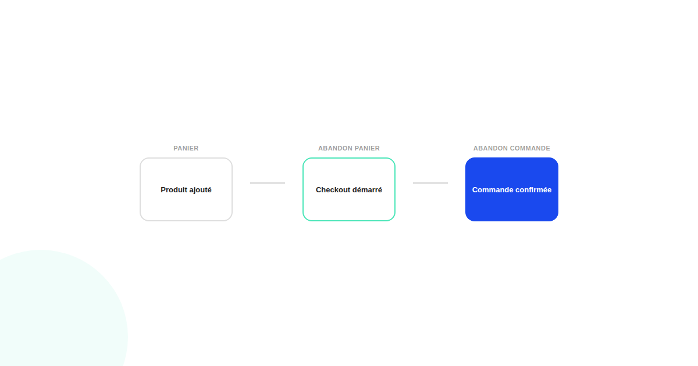
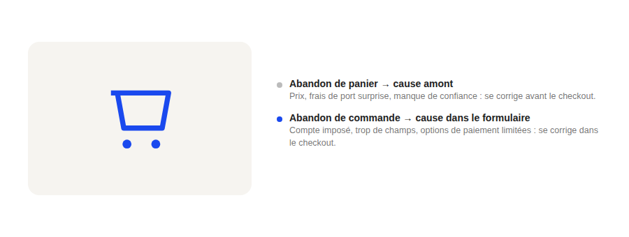

Abandon de panier vs abandon de commande : la confusion qui fausse vos priorités CRO
Le fameux chiffre de 70 % d'abandon qui circule partout mélange deux problèmes qui n'ont presque rien en commun dans leurs causes. Tant qu'on ne les distingue pas, on risque de corriger le mauvais problème avec la mauvaise solution.

Le chiffre de près de 70 % d'abandon, issu d'une agrégation de dizaines d'études compilée par le Baymard Institute, est cité presque systématiquement sans préciser à quel moment exact l'abandon a lieu. Or ce détail change tout : un visiteur qui quitte le site avant même d'arriver sur la page de checkout n'a pas le même problème qu'un visiteur qui démarre le checkout et ne le termine pas. Confondre les deux conduit à des plans d'action qui ratent leur cible.
Deux moments, deux définitions
L'abandon de panier désigne le visiteur qui ajoute un produit puis quitte le site sans jamais entamer le processus de paiement. L'abandon de commande (ou abandon de checkout) désigne le visiteur qui entre dans ce processus — souvent après avoir renseigné des informations de livraison ou de paiement — et l'interrompt avant la confirmation. Le taux d'abandon de commande, mesuré isolément, se situe généralement entre 25 et 40 %, nettement sous le chiffre agrégé de 70 % qui inclut l'abandon de panier plus large.
Pourquoi les causes ne se recoupent presque pas
Un abandon de panier a des causes qui se jouent souvent en amont du checkout : un prix jugé trop élevé une fois les frais de port révélés, un manque de confiance perçu (absence d'avis, de garantie, de preuve sociale), ou simplement une comparaison en cours avec un concurrent. Un abandon de commande, lui, se joue presque toujours dans le formulaire de checkout lui-même : création de compte imposée, trop de champs à remplir, options de paiement insuffisantes, ou un temps de chargement qui se dégrade au pire moment du parcours.

Comment savoir lequel est votre vrai problème
La réponse se trouve dans vos propres données d'entonnoir, pas dans une moyenne sectorielle : comparez le taux de passage de la page panier à la première étape du checkout, puis le taux de passage de cette première étape jusqu'à la confirmation. Un décrochage massif avant même d'entrer dans le checkout pointe vers un problème de panier (prix, confiance, pertinence) ; un décrochage concentré dans le checkout pointe vers un problème de formulaire.
Les corrections qui fonctionnent pour chaque cas
Pour l'abandon de panier : afficher les frais de livraison le plus tôt possible dans le parcours plutôt qu'au moment du checkout, renforcer les signaux de confiance directement sur la page panier, et simplifier la comparaison entre options pour réduire l'indécision. Pour l'abandon de commande : proposer un achat invité sans création de compte obligatoire, réduire le nombre de champs au strict nécessaire, et multiplier les options de paiement plutôt que d'en imposer une seule.
FAQ
D'où vient le chiffre de 70 % d'abandon de panier souvent cité ?
Il vient principalement d'une agrégation de dizaines d'études réalisée par le Baymard Institute. C'est une moyenne utile comme repère général, mais elle varie énormément selon le secteur (de moins de 50 % à plus de 90 %) et mélange souvent abandon de panier et abandon de commande dans sa communication publique.
Pourquoi distinguer les deux si le résultat final (pas d'achat) est le même ?
Parce que les causes et donc les corrections sont différentes : un abandon de panier se corrige souvent sur la page produit ou la transparence des coûts, un abandon de commande se corrige sur le formulaire de checkout lui-même. Traiter les deux avec la même solution revient à soigner le mauvais symptôme.
Le taux d'abandon de commande est-il plus facile à corriger que l'abandon de panier ?
En général oui, car il se limite à un parcours plus court et plus contrôlable (le formulaire de checkout), alors que l'abandon de panier peut avoir des causes en amont bien plus diffuses (prix, confiance, pertinence du produit) plus difficiles à isoler.
Envie de diagnostiquer où votre tunnel d'achat perd vraiment ses visiteurs ?
Pour aller plus loin, voir la page CRO, et l'article Trust signals.
Pour continuer sur ce sujet.